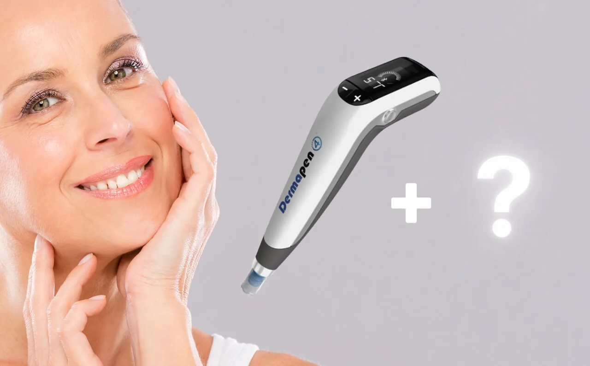
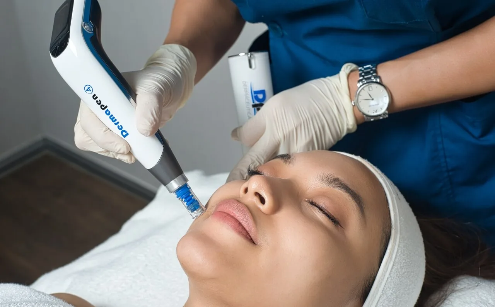

A comprehensive anti-ageing strategy is essential to achieve radiant and youthful skin. As we age, our skin undergoes numerous changes that can lead to wrinkles, loss of elasticity, and an uneven complexion. To combat these signs of ageing, many people are turning to advanced skincare treatments that offer more than just superficial improvements.
One such treatment that has gained considerable attention is Dermapen 4 Microneedling. This technology promises to rejuvenate the skin by stimulating its natural healing processes.
But how does Dermapen 4 fit into a broader anti-ageing regimen? In this article, we’ll explore the role of Dermapen 4 Microneedling in an effective anti-ageing strategy, and how it can enhance the results of other treatments, creating a holistic approach to maintaining youthful skin.
Understanding Dermapen 4 Microneedling

The Dermapen 4 Microneedling is a microneedling device used to repair, renew and rejuvenate the skin.
What is Dermapen 4?
Dermapen 4 is an advanced microneedling device that utilises fine needles to create controlled micro-injuries in the skin. This process, known as Collagen Induction Therapy (CIT), stimulates the body’s natural healing response, leading to the production of new collagen and elastin. The Dermapen 4 is renowned for its precision and versatility, offering adjustable needle depths and speeds to tailor the treatment to various skin concerns.
Benefits of Dermapen 4 Microneedling
Dermapen 4 microneedling is celebrated for its ability to address multiple signs of ageing and improve overall skin quality. Here are some of the key benefits:
- Reduction of Fine Lines and Wrinkles: By stimulating collagen production, Dermapen 4 helps to smooth out fine lines and wrinkles, resulting in a more youthful appearance.
- Enhanced Skin Texture: The treatment improves skin texture by encouraging the regeneration of skin cells, leading to a more even and refined complexion.
- Minimisation of Pore Size: Microneedling can help reduce the appearance of enlarged pores, making the skin look smoother and more polished.
- Improvement of Skin Tone and Pigmentation: Dermapen 4 can also address issues such as hyperpigmentation and uneven skin tone, leading to a more uniform complexion.
The Role of Dermapen 4 in Anti-Ageing
Dermapen 4 Microneedling plays a significant role in a comprehensive anti-ageing strategy, primarily through its ability to stimulate collagen and elastin production. These two proteins are essential for maintaining skin’s firmness, elasticity, and overall youthful appearance.
Collagen Induction Therapy (CIT)
Dermapen 4 is a tool designed to enhance collagen induction therapy (CIT). During a microneedling session, the device creates micro-injuries in the skin’s surface, which triggers the body’s natural healing response. This process not only accelerates the production of collagen but also boosts elastin levels, contributing to smoother and more resilient skin. As a result, Dermapen 4 helps diminish the appearance of fine lines, wrinkles, and sagging, making it a valuable component in any anti-ageing regimen.
Addressing Common Ageing Concerns
Dermapen 4 Microneedling is particularly effective at addressing a range of common ageing concerns. For instance, it can significantly improve skin texture and tone by reducing the visibility of hyperpigmentation and age spots.
Additionally, the treatment can help minimise pore size and enhance overall skin clarity, offering a more even complexion. Whether you’re dealing with the effects of sun damage, age-related skin thinning, or other signs of ageing, Dermapen 4 provides a targeted approach to rejuvenating your skin.
Combining Dermapen 4 with Other Anti-Ageing Treatments

The Dermapen 4 Microneedling a suitable device that can be paired with other aesthetic treatments.
Complementary Treatments
Dermapen 4 Microneedling is a highly effective treatment on its own, but its benefits can be significantly enhanced when combined with other anti-ageing therapies. By integrating Dermapen 4 with treatments such as chemical peels, laser therapy, or hyaluronic acid fillers, you can achieve a more comprehensive approach to rejuvenating your skin.
- Chemical Peels: Combining Dermapen 4 with chemical peels can enhance the overall results by exfoliating the skin and removing dead cells. This combination promotes deeper penetration of active ingredients and stimulates more pronounced collagen production, leading to smoother, more radiant skin.
- Laser Therapy: Laser treatments, such as fractional lasers or intense pulsed light (IPL), can complement Dermapen 4 by targeting deeper layers of the skin. While Dermapen 4 works on the surface to improve texture and elasticity, laser therapy can address pigmentation issues and vascular concerns, providing a more comprehensive solution for ageing skin.
- Hyaluronic Acid Fillers: Dermapen 4 can be paired with hyaluronic acid fillers to address volume loss and fine lines. While Dermapen 4 stimulates collagen and elastin production, fillers can instantly replenish lost volume and enhance facial contours, creating a more youthful and plump appearance.
Personalised Anti-Ageing Plans
At Dr Abby Clinic, we believe in the power of a tailored approach to skincare. Our team will work with you to create a personalised anti-ageing plan that incorporates Dermapen 4 and other complementary treatments. This bespoke plan ensures that your unique skin concerns are addressed, and your aesthetic goals are met.
By combining Dermapen 4 with other advanced treatments, you can achieve more dramatic and lasting results, revitalising your appearance and boosting your confidence.
Why Choose Dr Abby Clinic for Dermapen 4 Microneedling?

Dr Abby Clinic provides the Dermapen 4 Microneedling treatment to target a wide range of skin concerns and goals.
Expertise and Experience
At Dr Abby Clinic, we pride ourselves on our extensive expertise in delivering Dermapen 4 Microneedling treatments. Our team of skilled practitioners is dedicated to providing the highest standard of care and using the latest technology to achieve outstanding results. With years of experience in the field of aesthetic medicine, we ensure that each treatment is tailored to meet your unique skin needs and anti-ageing goals.
Personalised Care
At Dr Abby Clinic, we understand that every patient is unique. Our approach involves creating personalised treatment plans that address your specific concerns and desired results. We take the time to consult with you thoroughly, understanding your skin type, condition, and goals before recommending the best course of action. This bespoke approach ensures that you receive a treatment plan that is specifically designed for your needs.
Patient Testimonials
Don’t just take our word for it—our satisfied patients speak for themselves. We have a track record of delivering excellent results and enhancing our patients’ confidence through our advanced treatments. Many of our clients have shared their positive experiences and transformative results from Dermapen 4 Microneedling, showcasing the effectiveness and quality of our services.
Commitment to Excellence:
We are dedicated to maintaining the highest standards of safety, professionalism, and patient care. From your initial consultation to post-treatment follow-up, our team at Dr Abby Clinic is here to support you every step of the way. Our commitment to excellence ensures that you receive not only effective treatments but also a compassionate and supportive experience.
Choosing Dr Abby Clinic for your Dermapen 4 Microneedling treatment means opting for a trusted partner in your journey towards youthful, radiant skin.
Book a consultation with us today to discover how we can help you achieve your skincare goals with our expert care and advanced technology.
Categories
Related treatments